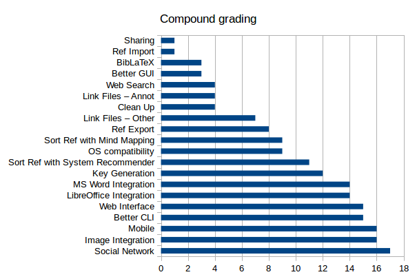

Overview of the 2015 JabRef survey
Introduction
In November 2015, the community was asked to fill a survey about JabRef usages and potential developments
About 400 responses were collected.
This page presents an overview of the results.
A detailed analysis is provided at Analysis.
Current use of JabRef
- JabRef is the primary bibliographic software of responders. If not, Zotero, a plain text editor and Mendeley are the most popular.
- JafRef is mostly used in relation with TeX-world softwares.
- English is the primary language for the user interface.
- Stability of the software is a key requirement.
- JabRef should be compatible with Windows, Linux and Mac.
- While hand edition of BibTeX files is common, feature improvements will reduce this practice.
- While the default key pattern is ok, the ability to alter it is a required feature.
- Both types of special characters (i.e. ü and "{u}) need to be supported.
- UTF-8 is widely-used for encoding the databases, so available choices of encoding could be simplified.
- Add-ons should be better advertised (import filters, export filters, plugins, journal abbreviation lists, external fetchers and external tools).
Improvements should mainly target:
- Importation of entry
- The graphic user interface
- Entry editing
New features?
The most desirable features are at the top of the graph, the least desirable at the bottom.

Who are the JabRef users?
- Most are German and English speakers.
- They mostly use JabRef for their work (mainly in natural sciences, formal sciences and professions).
JabRef users are willing to:
- attend JabCon 2016, and a webinar will boost the attendance.
- contribute code
- to contribute money
So, calls for event, code and financial contributions should be sent.